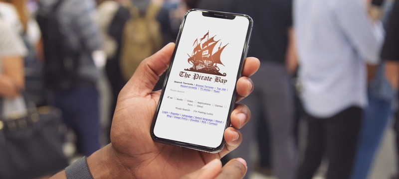
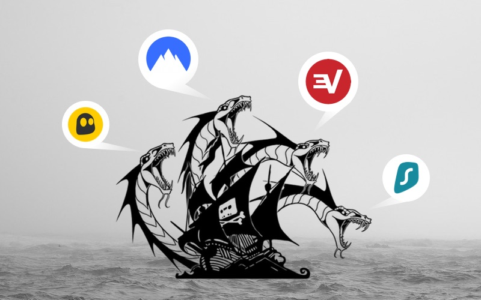
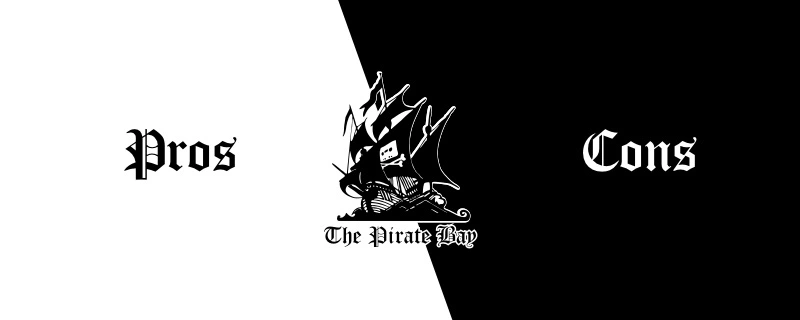
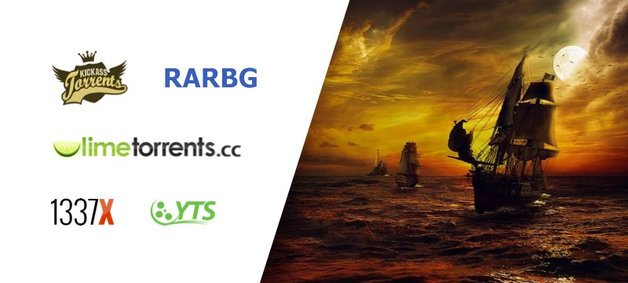

Table of contents:
ThePirateBay – The Best Place to Download Torrent Files
Founded in the year 2005 by a Swedish developer called Piratbyran, ThePirateBay (PirateBay) operates on the principle of unrestricted and open dissemination of information. It is a peer-to-peer torrent website where people can find a wide range of torrent files and also share their own files on the platform.
This P2P website specializes in sharing magnetic links, which are commonly used for referencing resources that are available for download through the network. This network is able to download the selected files with the help of a BitTorrent client. Initially, users of the piratebay were allowed to download torrents that came in the form of BitTorrent files – small files containing metadata that is required for downloading data files.
It is now easy to find torrent files on this website because they are classified into different categories including Audio, Applications, Games, Porn, Video, and Other. This site also offers a Browse feature that helps users to search for their favorite files without having to go through all categories. Furthermore, it features sub-categories such as Audio Books, Comics and High-res Movies. From the year 2013, pirate bay has been offering 3D-printable items that are found in the Physibles category. This website also offers different options of searching for particular torrent files, including the file name, date posted, number of leechers and seeders, and more.
A Guide On How to Use The PirateBay
If you are looking for the easiest and safest way to access great torrents on thepiratebay, here are some quick tips for you.
- Check the Top 10 Lists – these are the lists with the best movies, games, TV shows, applications, and more. You might not find everything you need but these lists are at least safe.
- Use VPNs Always – a VPN is important for protection even if pirates bay is allowed in your country.
- Avoid using it continuously – if you don’t download torrents continuously from this website, you will be safe. It’s that simple.
- Try to be anonymous – do not use your real name when registering your account. Try to be as anonymous as possible on the site.
- Leave feedback on your favorite torrents – by commenting on torrents, you help other users to find the best files. You can also benefit from other user’s comments. So help others so that they can help you.
These simple tips will keep you safe and happy on piratebay.
What Does It Mean to Browse ThePirateBay Using a VPN?
The Pirate Bay remains one of the most sought-after torrent sites in the world with hundreds of thousands of files that are free to download. The large catalog of torrents makes it difficult for the site to know which ones are illegal and which ones are not. However, TPB doesn’t deliberately condone the sharing of illegal content on the platform.
Since Pirate Bay is just a host for the network of torrent files, the onus of checking the legality of the files you are sharing or downloading is on you. That’s why it is important to use a virtual private network when opening the piratebay because you never know when you will come across copyrighted content. A VPN protects you against possible lawsuits.
Define the ‘PirateBay’
"Pirates" are the people who use The Pirate Bay, including the registered users who share magnet links and torrent files. The number of "pirates" on the pirate bay has grown exponentially since its inception and the subsequent raid by authorities in 2006. The site owners claim to have about 5 million active users.
Pirate Bay Is Older Than Most Torrent Sites
Although pirate bay is not the oldest torrent site in the world, it is among the first ones. This peer-to-peer sharing platform, which was established in 2003, comes in at number four, with Suprnova.org taking the lead followed by isoHunt and Demonoid, respectively.
Suprnova.org: This torrent website was developed by a Slovenian student in 2002. Until its closure in 2004 due to constant legal threats, Suprnova.org was the most prominent BitTorrent search engine around the globe. In 2007, piratebay acquired its domain name and relaunched it.
IsoHunt: Launched in January 2003, isoHunt was once one of the most sought-after torrent sites, enjoying millions of visitors every month and cataloging about 14 petabytes of torrents. However, the site was shut down in 2013 after losing a legal battle against conglomerates of several holders of IP rights.
Demonoid: Although Demonoid, which was developed in 2003, is still active, its future remains uncertain. This is largely due to the numerous lawsuits from Internet Service Providers (ISPs) and copyright regulators, as well as the prolonged duration of downtime. Furthermore, it is also believed that its developer passed away, leaving it defenseless.
How Has the pirate bay Managed to Stay Operational Over the Years?
Even with all the ongoing technological advancements, thepiratebay has managed to stay strong and unshaken. Despite the constant censure and sanction by authorities in different parts of the world, the website is still accessible to millions of users from across the globe. Its users still find ways to evade the numerous ISP blockades to obtain their favorite movies, TV shows, Apps, games, and photos from the site.
Currently, over 20 countries have restricted access to this peer-to-peer sharing site. These countries include Australia, United States, United Kingdom, China, Russia, Germany, Belgium, Netherlands, Spain among others. Nevertheless, there are many other countries and cities that allow full access to the site. They include Switzerland, Brazil, Hong Kong, Belarus, Mexico, and many others.
Unlike other torrent websites that weren’t able to withstand the numerous litigations and an over-saturated market, thepiratesbay has remained strong in the midst of similar challenges. Its ship still endures the sea of legal probes, nationwide restrictions, and cumbersome fines.
However, this website won’t, most likely, withstand all these hurdles without the untiring support of its users. Since this website doesn’t charge anything for its services, its only source of revenue is donations and paid ads through various cryptocurrencies such as Bitcoin, Monero, and Litecoin. Its owners use these funds to keep it operational all through the years.
With so many ways to evade the restrictions, the millions of Pirate Bay users continue to share and download their favorite content from the platform. Nevertheless, it is not clear how these restrictions and legal issues will pan out in the future.
Step by Step Guide to Downloading Torrent Files
from Pirate Bay
For you to be able to download torrent files from TPB, you have to have a BitTorrent client and a VPN (virtual private network) already installed in your device. Open these two programs and then choose the file you want to download. It could be a movie, music video, application, or a TV show. Here are the main steps to take to get a file from the pirate bay.
1.Get a BitTorrent Client
There are numerous BitTorrrent clients that you can use to download torrents from the pirate bay. For instance, you can use Folx. Once you’ve downloaded the software from the company’s website and installed it in your computer, make sure it is running properly. Then open the Options Menu in the settings and select your preferred download options. Now you are ready for the download.
2. Open Pirate Bay Site https://thepiratebay.org/
Due to numerous sanctions from different authorities, Pirate Bay keeps changing its URL. Therefore, if you can’t access the official website, try searching the name Pirate Bay on Google or the other search engines. This will help you to find the site’s updated URL. Alternatively, you can use the various proxy sites available. We recommend this sites:
- https://www.thepiratespace.org/
- https://www.tpbaysproxy.com/
- https://www.thepiratebay1.to/
- https://www.thepiratebay2.to/
- https://www.pirateproxy.space/
- https://www.tpbproxypirate.com/
- https://www.thepiratebay3.to/
- https://www.thepirateproxies.org/
3. Search for the File Using the Search Bar
In the search bar, type the name of your preferred file and press enter. It will give you a list of the torrent files that have that name. From this list, you should choose the files that have the most seeders because they download faster.
4. Click on "Get this Torrent"
Once you have opened the torrent file you wish to download, you should click the magnetic link labelled "Get This Torrent" to add the file to your BitTorrent client. The file should start downloading immediately. Also, remember to choose where the downloaded file should be stored in your device. Wait for the BitTorrent to let you know when the file is complete. Once complete, the file will show "Distributed" or "100%." You can open it on your computer by double-clicking on it or move it to another device for subsequent use or playback. Bravo!
Always Check the Status of a File Before You Download It
Since the content available on pirates bay is shared by individual users, it is very difficult for the site owners to check the legality of each file. Therefore, when you access the site, you bear all the legal liabilities that may arise from sharing or downloading copyrighted content. That’s why it is important to check the status of each file before you download it.
It has been noted that copyright watchdogs are purposely sharing copyrighted content on the site with the aim of tracking the offenders. Also, some files are laced with viruses and harmful malware that could damage your PC, network, or router.
The good thing about thepiratebay is that it enables you to check the status of a file before you download it. For instance, it offers a three-tier rating system that is based on color to help you know the quality of each file. Pink indicates Trusted, while green means VIP users.
What Are Pirates Bay Mirror Sites?
As its name suggests, a mirror website is a copy of another website. In most cases, mirror sites belong to the original site and are designed to ease traffic on the main site and improve its access speed. But in the case of thepiratebays, mirror sites belong to other people who have nothing to do with the original site.
Pirate bay mirror sites serve as pirate proxy sites, allowing you to avoid the restrictions placed on the original TPB site. Although you can still circumvent these ISP restrictions using a VPN or an all-purpose proxy site, mirror sites are more reliable because they remain accessible even when the original domain name is down.
In short, the pirate mirror sites and piratebay proxy sites don’t have much difference. You can use any one of them to get the same content.
Check the Status of the File Before You Download It
Since the content on pirate bay is shared by individual users, it is important to check if the files you want to download or share are copyrighted. The moment you access the site, you assume all legal responsibilities that come with sharing or downloading files from it. Also, you need to understand that some ISPs and copyright watchdogs upload movies and TV shows purposely to upload files that contain spyware.
Other files contain harmful malware and viruses that can infect your PC, network, or router when you download them. The good thing is that the pirate bay allows you to check the status of the file before you download it. That is the easiest way to protect yourself. The system has a three-tier, color-based system that allows you to know the quality of a file. The Pink color shows Trusted, while Green means VIP users.
All These Results, But How Do I Know Which One is the Best?
If you feel overwhelmed by the number of results generated by The Pirate Bay search option and want a quick way to decide which one is the best pick in terms of download speed, we have some tips for you. Towards the right side of the screen, you will see two columns names SE and LE. It’s the abbreviation from Seeders and Leechers and this is one of the most important pieces of info when trying to determine the health of a torrent.
Seeders are the users that already downloaded the file and are acting as a source from where you will download parts of the file as well. If a torrent has 400 SE, it means there are 400 users connected to the tracker that offers the file you are looking for. On the other hand, a Leecher is a person that is in the process of downloading data from Seeders. So, if you want the best download speed and the guarantee your download won’t get stuck along the way, you need to check for a torrent with a high number of seeders and a lower number of leechers.
Take this into consideration. When downloading a big file, let’s say 100GB, from hundreds of users, you can get it done in a few hours depending on your internet speed. On the other hand, if you download the same file from just 1 person, the transfer will take a lot longer because there could be several leechers to that 1 seeder. Also, if the file only has 1 seeder, the multithreaded download can’t take place so the same 100GB file can take up to two days to complete.
Also, you may have noticed that among the search results, identical content has different file sizes. In case you were wondering why that happens, we have the answers for you. Most of the time, the difference in quality is what makes the content to vary in size. Take a YouTube video for example, while the video has the same length, choosing between 1080p and 360p quality will generate a different file size. If it’s not quality that makes the difference, sometimes it’s the file type. Especially for video files, various formats and containers can be used generating different file sizes. Another possible situation can appear when downloading software. If you know the app should be around 300MB but you find one with the same name that has 1GB, there’s a big chance there are some other tools included, or various patches and extensions.
Going back to how to figure out which of the search results are what you want to download, checking the comments column is also a great idea. You will see if it was flagged as malicious or other users experienced difficulties in downloading that file.
Is The Pirate Bay Safe?
The pirate bay isn’t illegal because it does not offer its own torrent files or adverts. It is just a peer-to-peer sharing website. Therefore, if the website has not been banned in your country, you can enjoy its content freely without fear. If it has been prohibited, you can still access its content through various proxy and mirror sites, including thepiratebays se which is the most common mirror site.
These sites mirror the same content that’s available on the original pirate bays site. However, they have different domain names and IP addresses. While most of these mirror sites are safe and reliable, some have malware and pop-up ads. Even the original site has files that contain malware. Since the files shared on this platform are hosted by individual users, the website is unable to regulate their quality. That’s why you should be extra careful when opening magnet files on this platform.
What Is the Quality of Movies Found On Piratebay?
Generally, it is not possible to know the quality of files you want to download from piratebay because the site doesn’t have a way of checking the quality of files being shared by users and doesn’t offer files of its own. So, the best way to know the quality of the file you wish to download is to read other people’s comments and reviews. Only choose movies with the highest number of positive comments.
How to Access Pirate Bay from Mobile APP?

Users that visit The Pirate Bay before 2013 know that the mobile experience on the website wasn’t exactly functional. Accessing BitTorrent was limited to a few options and the entire content on the website looked messy.
Things were bad enough for the founder of TPB to describe the mobile user experience as “crap” in those days.
With more and more mobile visitors on the website, The Pirate Bay started to become a lot more mobile-friendly and the experience improved considerably. However, despite the updates in mobile user experience, iOS users are still unable to download content from The Pirate Bay without jailbreaking their phones or tablets.
You won’t have to worry about this aspect if you’re using an Android mobile device since Google Play offers you plenty of torrent clients to download content from TPB. The same goes for Blackberry users that can enjoy a smooth mobile experience on the website.
Besides the dedicated torrent clients available for those operating systems, thepiratebay.org also offers an RSS feed. The RSSBay is excellent for customizing your mobile experience and even download content remotely, straight on the computer.
No matter the operating system, The Pirate Bay is an unlimited source of content with more than 75,000 new torrents being added every month. Make sure you don’t miss any of your favorite content and use TPB on your smartphone and tablet for instant access to all the best torrents.
How Much Will It Cost You to Use Piratebay? Nothing
Pirate Bay doesn’t charge you anything to share or download files. Its main objective is to help people share information freely. Also, it doesn’t charge a membership fee.
Piratebay only makes money through donations given by users in the form of cryptocurrency. Furthermore, you are under no obligation to give donations.
But you need to understand that through the donations, the website stays up and running. So, for you to continue enjoying the free content on TPB, it is wise to make a small donation once in a while. Donating some crypto also makes you look cool.
The only cost that is extremely important is to invest in a virtual private network (VPN). This program helps you to hide your IP address – the home address of your device. You can easily be tracked through your IP address.
While most of the files on thepiratebay are legal, some may infringe on copyright and privacy laws. Unfortunately, it is not easy to know when this infringement exists. Without any obvious way to know what is legal and what isn’t, a VPN is the only safe option for you. It will also help you to access TPB if it has been blocked in your country.
Therefore, even though it is not mandatory to use a VPN, you should always use it when accessing the pirate bays or any other torrenting site.
Is Torrenting with a Hidden IP Address Legal?
The ongoing technological advancements have made it possible for people to keep their torrenting activities safe and anonymous using Virtual Private Networks (VPNs). Without a VPN, your internet provider can easily monitor your online activities, including the websites you open, the web pages you visit, and the files you watch or download. This is dangerous because, in a country like the US, ISPs are free to share this data with other people, including the owners of the intellectual property you are downloading. This can easily lead to legal action because most people who like to download torrent files do not know which files are illegal and which ones are not.
So, a VPN makes it difficult for your ISP to monitor your online activities and also protects you against lawsuits that may arise out of downloading or sharing prohibited content. Furthermore, a VPN minimizes the risk of sharing your private information by keeping you anonymous when using the internet.
But although it is not illegal to use a VPN, it is illegal to use it to download or share copyrighted content. So, even though a VPN will protect you from exposing your torrenting activities to third parties, you are only required to share or download materials that are not protected by copyright. Therefore, if you are torrenting copyrighted content, you are doing so at your own risk.
How to Use VPNs to Download Torrent Files from Piratebay?
VPNs have proved to be the safest way to access and open different torrent links on the pirate bay. Here are some of the important guidelines for using a VPN.
- Install a VPN–there are many free VPNs that you can download and install on your PC. You can also find the most advanced ones that are quite affordable. The best one we can recommend is NordVPN.
- Open Your VPN—when your VPN is fully installed, open it and search through different countries to choose the safest one to use for the Pirate Bay. The safest countries including the U.S.A, Netherlands, and Switzerland.
- Click the connect button—click on the Connect button or any other button that is meant to allow you to activate the application. Sometimes the application might refuse to connect to certain countries, so try as many countries as possible.
- Download Files from Pirate Bay—once the VPN is connected, choose the files you want to download from tpb and download them. Make sure you are connected whenever you download a file.
- Disconnect the VPN—once you are done downloading the files, disconnect the VPN. You don’t need it to view or use the downloaded files.
Those are the simple steps for using a VPN for Pirate Bay. Have fun!
How to Visit the Pirate Bay Using a Mobile Device?
Before 2014, it was very difficult to access thepiratebay.org using a mobile device. Not many options existed back then, in as far as opening a BitTorrent client was concerned, and the whole catalogue on the torrent site appeared messy. In fact, the founder of pirate bay was honest enough to admit that the website’s mobile experience was “crap” at the time.
However, as the number of its mobile visitors continued to grow, the site became more friendly to mobile users, with the mobile experience improving considerably within a short period of time. But even with these updates, iOS users still continue to have problems accessing The Pirate Bay. They have to jailbreak their mobile phones and tablets in order to access the site.
Luckily, Android users do not have to endure the same difficulty because they can find numerous torrent clients on Google Play that can help them download content from thepiratebay. The site is also accessible to Blackberry users. In addition to these torrent clients, the website also offers RSS feeds that make it more accessible. This RSS function allows you to download content from the site remotely and customize your mobile phone experience.
With over 75,000 new files being uploaded to the site every month, the pirates bay is definitely an unparalleled source of free online content. The good thing is that you can enjoy all these torrents on your mobile phone or tablet regardless of its operating system.
How to Select the Right Torrent File from Search Results?
When you search for a torrent file on the pirate bay, you will be given a list of files that have that name. This list is divided into two columns labelled SE and LE. The SE column is for seeders and the LE one is for leechers. Simply put, seeders have the torrent file you wish to download while leechers are people trying to download the file.
Therefore, for faster downloads, choose files that have more seeders and less leechers. If a torrent file has 400 SE, it implies there are 400 people on your network who have that file. And if the file has 400 LE, it implies that there are 400 users on your network trying to download the file.
Essentially, a 5GB torrent file with 200 seeders will only take one or two hours to transfer to your device provided your internet is good. However, you may have to wait for a few days to transfer the same torrent file that has 10 seeders and 100 leechers.
Same torrent files can have different sizes, mainly due to their quality. A good example is YouTube videos, which have several quality options, including 144p, 240p, 360p and 480p. Also, some files, especially applications, come with additional tools, which increase their sizes. Therefore, choose a smaller file to avoid installing the unnecessary additional tools.
Before you download any torrent file on Pirate Bay, you should go through the comments in the comments section to see what other users think about the file. This is the section where users leave their feedback. By reading the comments section, you will find out if the torrent has malicious malware.
How to use VPN before torrenting

If you want to open links and download files from Piratebay safely, you need a VPN. Here are the easy ways to use VPNs to download content from the website.
- Install a VPN—download any of the popular VPNs and install it on your PC. If you don’t want the free VPNs, you can choose the affordable ones. The most common VPNs today include ExpressVPN, NordVPN, HotSpot Shield, Tunnelbear among others.
- Open the Interface—once the VPN is fully installed, click open to access its interface. Then, choose the safest country for your VPN. The most preferred countries include the U.S.A, Netherlands, and Switzerland.
- Connect the VPN—click on the Connect button or any other button designed to help you activate the application. If it doesn’t connect to the country of your choice, choose another country.
- Download files—when the VPN connects, find the files you want and download them. Never download a file from tpb before you connect your VPN.
- Disconnect Your VPN—After downloading the files, disconnect the VPN. You don’t need it to watch the content you’ve downloaded.
That’s the safest way to download content from Pirate Bay. Have fun!
Do the Skulls Accompanying Some Files on Pirate Bay Mean Danger?
Since childhood, human beings are taught to believe that skulls mean death. That’s why some people fear the skulls and crossbones that accompany some torrents on TPB. But the truth is that the skull symbols on the site are friendly and a sign of honor.
Remember, pirates have always used banners and cruises with skulls and crossbones as their identity. On the pirate bay, having this symbol is a great honor and a sign of trustworthiness.
Since the Pirate Bay uses magnet links to share torrents, some unscrupulous users use the links to hide malware and viruses that can infect your computer, router, or network. To protect you against these threats, pirates bay uses the skull symbol to help you know which users can be trusted and which ones cannot.
These symbols also come in two main colors: pink and green to indicate the level of trustworthiness. By the way, magnet means magnet links that allow you to download torrents. But this is a whole different topic that will be discussed another time.
Pink Means Trusted
When you come across a user with a pink skull symbol, it means that they have been using the site long enough to be trusted. Their torrents are clean and free of malware and viruses.
Green Means a Very Important Person
Green indicates a higher level of trustworthiness than that of pink. It also means that the person has been acting responsibly on the site and therefore they have more liberties than other users.
You will also notice that some users have admin and moderator tags. This means that they have volunteered to manage the pirate bays.
No Skull Symbol Means Unknown
Pirate bay users whose names do not have the skull symbol are fairly new to the site. This also means that they pose a potentially higher risk than the users with the skull symbol. However, this doesn’t necessarily mean they are engaging in any illegal activities. They are just new contributors who haven’t earned the skull symbol yet.
Benefits and Risks of Downloading Files from TPB

Benefits:
1. Easy to Use
This site features a decentralized system that allows you to share files with your peers using BitTorrent protocols. Although this site has existed for over 15 years, its protocols are upgraded regularly to keep it simple and easy to use.
2. Easy to Locate Files
Pirate bay offers a smooth and quick way to find your preferred movies, TV shows, music, applications, games, and more through its intuitive interface. You can search for your favorite files on the site using different filters.
3. Fast Downloads
The pirate bay is unmatched in terms of fast download speeds. This site offers a lightning-fast experience as long as your internet connection is stable and you choose files with the highest number of seeders.
Risks:
1. Unintentional Access to Illegal Content
As previously indicated, TPB is just a platform for facilitating the sharing of content among peers. So, the site doesn’t regulate the content uploaded or downloaded. This puts you at risk of sharing or downloading illegal content without your knowledge.
2. Harmful Malware and Viruses
Like any other P2P website, pirate bay has been infiltrated by users with ulterior motives. These users share files that have malware and viruses that can easily infect or damage your computer or network. These viruses can easily compromise your information, including email addresses. That’s why you should always use a VPN and an antivirus program to protect you against spam, DDoS, malware, etc.
Pirate Bay Has Adopted a New URL Structure
At the beginning of the year 2020, the Pirate Bay remained inaccessible for a couple of weeks as the site developers carried out some restructuring works. The updates involved the adoption of a new URL structure, which affects anyone trying to pursue a Digital Millennium Copyright Act (DMCA) takedown. And with the number of pirate bay users increasing exponentially due to the stay-at-home situation brought about by Covid-19, millions of DCMA takedown notices from content creators are expected to increase all through the year 2020.
This also means that the website visitors and downloaders will continue to receive several notices for a single activity. Majority of the users might not even experience any difficulties with the latest URL structure, but the site may present some random coding or screen errors. Since old links are able to redirect to new ones, your bookmarks are still useful.
Since 2016, the pirate bay has received More than 5 million takedown requests, but because of the recent updates in address, all of these requests have to be submitted afresh for the links that are still active. Another notable change is the sharp decline in activity levels. This drop is probably as a result of the new magnetic links rather than traditional server procedures.
How to Circumvent Blockade by Your ISP?
Have you noticed that your internet connection becomes slower at night, especially when you are downloading or sharing torrent files on pirate bay? If so, it could be that your internet service provider is restricting the P2P bandwidth. With these restrictions, you are unable to load torrent files or even open the P2P website.
So, for you to continue to enjoy your favorite torrents, you have to bypass the bandwidth restrictions by your ISP. You can achieve this by installing a virtual private network (VPN) on your device. With a VPN, you will be able to send data traffic through encrypted tunnels, thus preventing your ISP from tracking your activities. That way, they won’t be able to restrict your connection.
It is More Enjoyable to Contribute to the Pirate Bay Community
As one of the most popular torrent websites, the pirate bay continues to attract more users every day. Although sharing torrent files is the main objective of using this website, most users seem to be drawn to the website by the large number of usable torrents being uploaded every day. Therefore, being a contributor gives you a sense of achievement, knowing that you are part of the reason why the community continues to grow.
How to become a contributor on TPB?
- Open your account on Pirate Bay.
- Once you are logged in, find the Upload link at the bottom of the Home page.
- Find the file you want to upload.
- Name the file – choose a title that can be easily searched using the Search option.
- Choose the right category for your file on the site.
- You can choose to upload the file anonymously or reveal your identity.
- Include tags and a description.
Note: It is not a must that you create your pirates bay using your personal information. You can still give users access to your files using your Bitcoin wallet address. That way, you can still offer support to the platform without revealing your identity.
Pirate Bay – How Often Is It Inaccessible?
There are many reasons why pirate bay may be inaccessible in your region. The duration it remains unreachable also depends on the location you are in. For instance, if you are in an area with legal restrictions on downloading websites such as thepiratebays, then you will always experience forced downtime. Sometimes authorities will restrict access to certain portions of the website.
When your government blocks pirate bay or any other torrent site, there is no legal recourse that you can take because different internet systems have the right to limit access to such sites for copyright infringement reasons. The only way you can circumvent this is to use a VPN or do location spoofing. However, spoofing is only effective for a short while.
In some situations, mirroring websites have proved to be quite useful. These are websites that replicate the content available on the main TPB site. They are quite useful in areas where the main site has been blocked. However, some authorities block even the pirate bay proxy sites. So, you will have to dig deeper into the list of mirror sites available to find the ones that are operational.
In other instances, the website may be down because of server overload. Just like a crowded hallway, a URL can also be overcrowded, resulting in digital jams. In this case, you should just wait for the jam to resolve itself naturally. So, keep trying until the system is restored.
Why Should I Use a VPN to Browse thepiratebay?
The Pirate Bay has proved to be the most reliable P2P sharing platform for torrent files. It offers hundreds of thousands of files, including movies, TV shows, music, and applications. With all this content, the site doesn’t promote sharing of illegal content. It is just a platform where users can share files through their networks.
Therefore, the site is not responsible for the sharing of any copyrighted content. For this reason, you are responsible for your own security when using pirate bay. That’s why it is advisable to use a VPN when accessing or downloading content on the site. It saves you the hassles associated with torrenting.
Why Is Safe Browsing Important?
One of the reasons why you should practice safe browsing is to prevent your internet provider from monitoring your activities on the internet. Without any security measures, your ISP is able to monitor you and know whenever you visit restricted sites such as TPB. This is risky especially if you live in a country where the pirates bay has been prohibited due to copyright infringement problems.
Luckily, a VPN helps you by-pass all these hurdles by concealing your IP address and your activities on the internet. It also gives you an alternative IP address, allowing you to browse restricted sites without exposing yourself. With a VPN, your personal data is encrypted, giving you the freedom to enjoy the free content on the pirate bay.
Can You Find Quality Movies on the pirate bays?
Generally, the pirate bay is known to offer high-quality movies, but you can’t be certain about the quality of every movie you find on the site because TPB doesn’t check the quality of files being shared on its platform. The site only offers magnet links that take you to the torrent file you are looking for. So, it’s important to read other users’ reviews and comments under every link to know the quality of the file before you open it. If the quality is good, other users will leave positive comments.
Do Files on Piratebay Contain Malicious Content?
Nobody can guarantee you that the files you are downloading from the pirate bay don’t have malicious content. The site only offers a platform for peer-to-peer sharing, and the torrent client you are using doesn’t check the quality of the content you are downloading. So, the only way to prevent downloading malicious content is to install a reliable antivirus program on your PC. This program detects and blocks any harmful content when downloading files from the pirate bay.
Do Files from the Pirate Bays Have Malicious Content?
It is not possible to assure you that the files you will download from the pirate bays don't contain malicious content. This is because TPB only provides magnet links to the file you wish to download, and even the torrent client program you use doesn’t have a way of checking the quality of the content. That’s why you need to install a reliable antivirus program on your PC to help you detect and block malicious content.
Cloudflare Issues the Pirate Bay Status Code 522
For a popular website like the pirate bay to remain accessible to millions of its users around the world, it has to use a reliable content delivery network (CDN). Currently, TPB uses Cloudflare as its CDN. The main function of this CDN is to improve the site’s security, accessibility, and loading speed.
And because Cloudflare has put up over 155 data centers across the world, thepiratebays can be accessed in different parts of the world and withstand spikes in traffic due to DDoS attacks. This Cloudflare error alert is displayed on your screen when the TCP fails to connect to the web server, especially when a Cloudflare request to the main web server like Pirate Bay is blocked.
Are There Alternatives to Pirate Bay?
Over the years, the piratebay website has gained a massive following and popularity around the world mainly because it is easy to use. In fact, it is considered the most consistent and trustworthy torrent site. However, because of its popularity, the site is often the first one to be censored by authorities, making it risky to use. Also, it is increasingly becoming challenging to unblock the TPB website in different countries. Fortunately, there are numerous alternatives to this website.
Kickass Torrents – this a torrent website sharing downloadable movies, games, applications, TV shows among others. It is accessible from almost any part of the world. Even in places where it has been blocked, it can easily be accessed through VPNs. Also, the site has numerous domains that can be used by users in places where the main site has been blocked.
EZTV – if you like streaming TV shows, this torrent site is ideal for you. It has many great features including a calendar with release dates, an anonymity checker, and more. This website is easy to access and use.
Zoogle – this website offers hundreds of thousands of great movies, games, and TV shows. Its only drawback is that it has so many pop-up ads. However, there are many ad blockers that you can use to fix this problem.
ExtraTorrent – this torrent website has a great layout and a search bar that makes it simple and easy to use. The site also offers a large BitTorrent system which has loads of content.
IDope – this is one of the latest torrent sites and a dedication to Kickass. Currently, it has more than twelve million torrents. Its up-to-date layout makes it easy to use.
How to upload files to piratebay:
- Go to the site.
- Sign up for an account or use an existing one to log in.
- When you are logged in, click on "Upload".
- Select the file you wish to upload.
- Select a name, specify the category, key in the tags, and create a description.
- You can upload the file anonymously or display your username.
- Upload the file and remember to seed for as long as possible so that more people can download it fully.
Since uploading files to piratebay.org is so simple, cybercriminals have taken advantage of this opportunity to upload fake and illegal torrents using names of popular videos and games in order to distribute unsafe malware.
Therefore, you need to double-check every torrent before you click the download button. In fact, you should only choose files uploaded by well-known and verified users.
Top Five Alternatives to Pirate Bay

KickassTorrents
KickassTorrents is not new; it has always been rated as the world’s most visited torrent website since its inception in 2008. It has even overtaken The Pirate Bay in this regard. Despite the seizure of its domain by the American government in 2016, the site remains one of the best options for torrent lovers.
1337x
1337x is best known for its ability to outsmart copyright watchdogs. It has several substitute domain names that enable it to survive frequent name seizures by authorities. 1337x is a great source of movies, music videos, games, TV shows, applications and other useful files. The website accepts donations in the form of Bitcoin. Go to its homepage to access the donations link.
YTS
YTS, commonly referred to as YIFY, is a P2P release group focusing on the distribution of movies with amazing video quality as well as small sizes. After the original site was seized by the Motion Picture Association of America (MPAA) in 2015, a lot of copycats have emerged with YTS_AG taking the lead. The great this about this site is that it only provides verified torrents.
It allows you to filter your search using the quality, rating and genre of the file. All movies on this website come with descriptions to help you find what you are looking for.
TorLock
On TorLock, you can expect to find nothing else but verified torrents. At the moment, the site catalogues over 5.3 verified torrent files, overtaking even Zoogle. Files on TorLock are placed in various categories including games, software, eBooks, images, movies, television among others. In addition to these categories, TorLock has a tag cloud on its homepage. This cloud features trending torrents that make it easier for you to find the latest content. Registered users are allowed to comment on torrents, making the website even better.
Zoogle
This is one of the latest torrent sites on the market. It originated from Russia but all its content has been completely decrypted into English. Zooqle offers about 4 million torrents, all of which are verified. Its latest design has made it very easy for users to subscribe and set up RSS feeds.